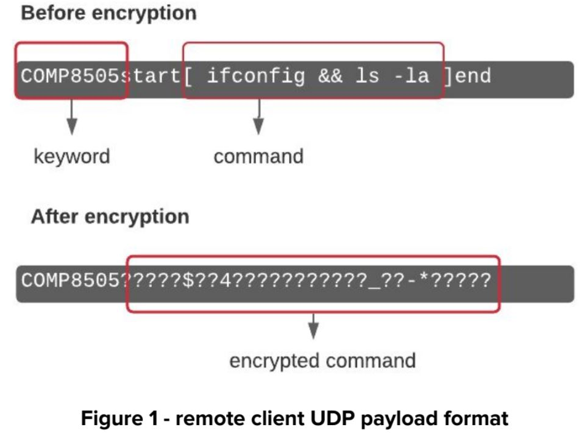
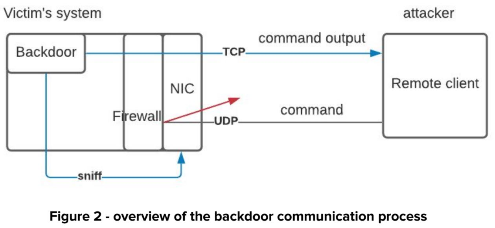
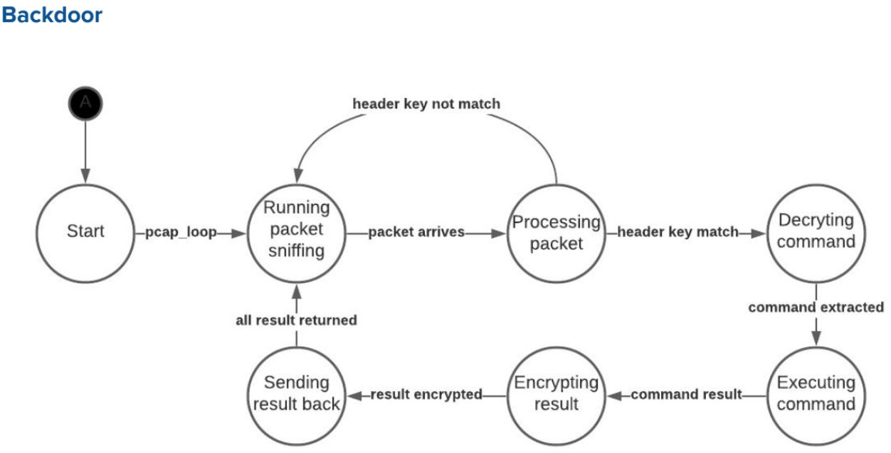
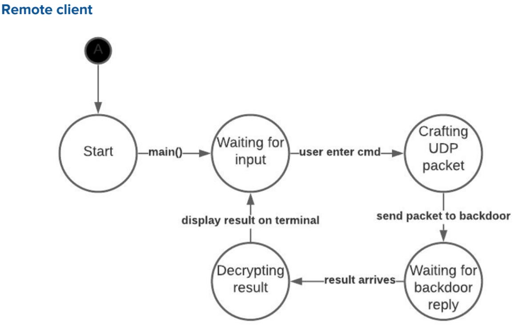
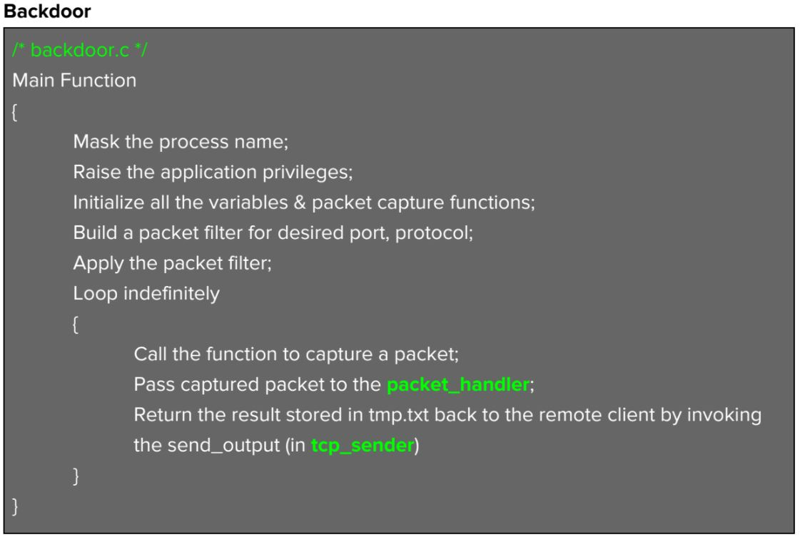
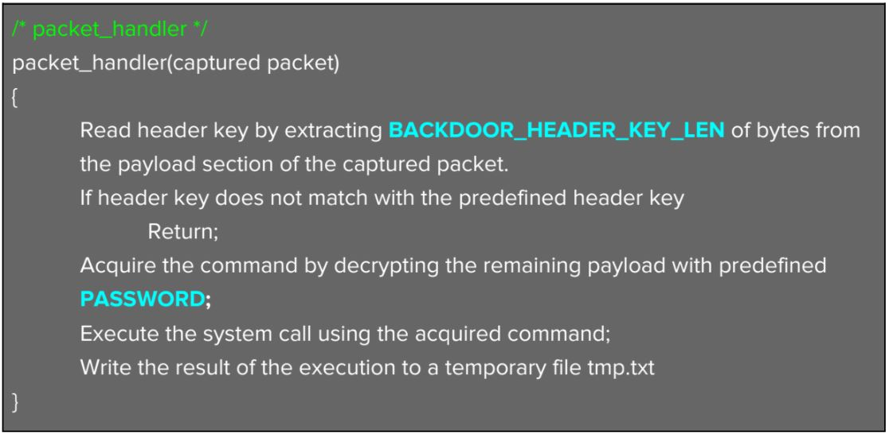
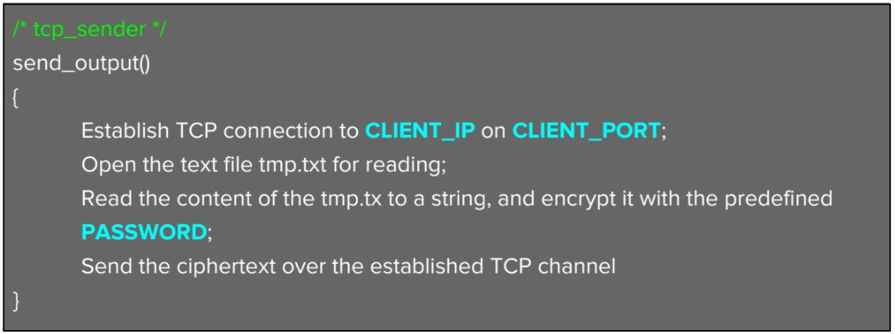

Objective
Design and implement a packet sniffing backdoor. The backdoor is essentially a communication channel between a victim's machine and a attacker's machine
Constraint
- The backdoor must camouflage itself so as to deceive anyone looking at the process table
- The backdoor must ensure that it only receives (authenticate) those packets that are meant for the backdoor itself
- The backdoor must interpret commands sent to it and execute them and send the results back.
- Incorporate and encryption scheme into the backdoor
Approach
We will use the c library libpacp to implement the backdoor. To make the process of communicating with the backdoor more intuitive, we will also write a remote access client. To issue a command to the backdoor, the remote client will send a UDP packet to the backdoor. The payload of that packet has a predefined keyword followed by a ciphertext of the actual command to be executed on the backdoor. The key used to create the ciphertext is shared with the backdoor program.
Network trafiic capturing happens before the firewall, therefore, the backdoor will still be able to sniff the incoming packet even if there's a blocking rule in place. When the backdoor receives the UDP packet, it will check the keyword in the payload to verify that the packet is indeed from the remote client. Next, it will proceed to decrypt the encrypted command, execute the command, and send the output of the command back to the remote client over TCP. The figures below show a sample of the UDP payload, and a high level overview of the communication process.
 Application design
Modules
The backdoor has four component, backdoor.c , packet_handler.c , tcp_sender.c and config.h
- backdoor.c - program entry point. Responsible for running packet sniffing. Has a callback function that invokes the packet handling function (in packet_handler.c ) and command result returning function (in tcp_sender.c )
- packet_handler.c - consists of a single function packet_handler(). The function is responsible for three things: determining whether the sniffed packet is for the backdoor or not, executing the received command, and writing the result of the command execution to a temporary file.
- tcp_sender.c - consists of a single function send_output(). The function establishes TCP connection back to the remote client, and sends the content of the temporary file back to the remote client. The temporary is generated by the packet handler.
-
config.h
- some defined constants, important ones including
- BACKDOOR_HEADER_KEY - keyword for identifying packet for backdoor
- PASSWORD - use for data encryption
- SNIFFER_FILTER - filter to apply when using the pcap functions
- CLIENT_IP - remote client ip
- CLIENT_PORT - remote client tcp listening port
The remote client has two component, client.c and config.h
- client.c - program entry point. Responsible for sending commands to the backdoor, and listening for result return from backdoor
-
config.h
- some defined constants, important ones including
- BACKDOOR_HEADER_KEY - keyword for indentifying packet for backdoor
- PASSWORD - use for data encryption
- SEND_PORT - the port that backdoor is sniffing on
- CLIENT_PORT - tcp listening port, for reading result
- BACKDOOR_IP - ip of the machine running backdoor
State machine
 Pseudo implementation
(* blue is defined constant in config.h, green is the module)
  Usage
Step 1
Open the
config.h
in backdoor folder, edit the value of following constant:
- BACKDOOR_HEADER_KEY - key to authenticate the packet
- BACKDOOR_HEADER_LEN - length of the header key
- PASSWORD - password for encrypting execution result before sending back
- PASSLEN - length of the password
- SNIFFER_FILTER - pcap filter (e.g. "udp dst port 54")
- NIC_NAME - name of the network interface to sniff on
Step 2
Open the config.h in remote_client folder, edit the value of following constant:
- BACKDOOR_HEADER_KEY - key to authenticate the packet
- BACKDOOR_HEADER_LEN - length of the header key
- PASSWORD - password for encrypting execution result before sending back
- PASSLEN - length of the password
- BACKDOOR_PORT - port number the backdoor is sniffing on
- CLIENT_PORT - tcp port to listen on, for receiving result from backdoor
- BACKDOOR_IP - ip of the machine running backdoor
Step 3
To run the backdoor in a termianl, cd into the backdoor folder. Then run "make all"div The Makefile will compile, clean and automatically run the executable.
To run the remote client in a terminal, cd into the backdoor folder, then run "make all". The Makefile will compile, clean and automatically run the executable. The terminal should prompt you for input. Type a command and press enter (e.g. ifconfig). If all things are configured correctly, and the backdoor is running, the terminal running remote client should receive the same result return from the backdoor.
Source code
The project source code can be found here .